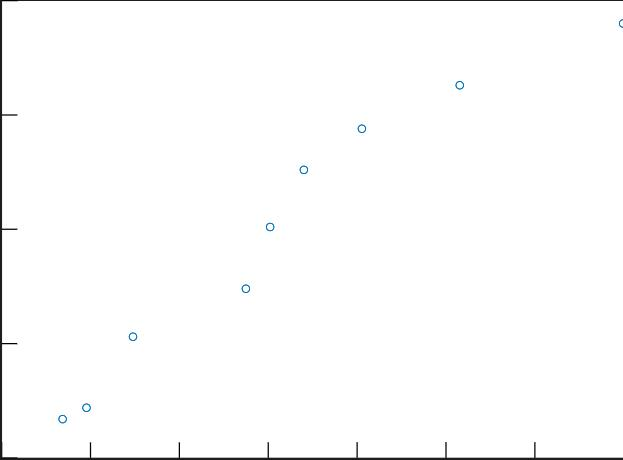

线性回归(一)-多元线性回归原理介绍
本文最后更新于：2 天前
引言
高中的数学必修三有一个概念——线性拟合，其主要原理是通过对两组变量的统计值模型化。高中的的模型主要是简单的一维线性模型，在某种程度上也可以叫做一次函数，即$y = kx + b$的形式。这是一个简单的线性拟合，可以处理两组变量的变化趋势呈现相当的线性规律的问题，且关于因变量只有一个自变量。实际情况下，对于一个目标函数进行估计，其影响因素可能会有多个，且各个因素对于结果的影响程度各不相同。若多个变量的的取值与目标函数取值仍呈现线性关系，则可以使用多元线性回归进行建模预测。本文将从一元线性回归推广到多元线性回归。并通过统计学的显著性检验和误差分析从原理上探究多元线性回归方法，以及该方法的性质和适用条件。
多元线性回归理论
从一元线性回归讲起
假设有一个分布列，如下表所示：
| 0 | 1 | 2 | 3 | 4 | 5 | 6 | 7 | 8 | 9 |
|---|---|---|---|---|---|---|---|---|---|
| Y | 6.7 | 7.2 | 10.3 | 12.4 | 15.1 | 17.6 | 19.4 | 21.3 | 24.0 |
| X | 343.4 | 477.6 | 739.1 | 1373.9 | 1510.2 | 1700.6 | 2026.6 | 2577.4 | 3496.2 |
我们绘制它的函数图像，如下图所示

由散点图可以明显看出变量x和y具有相同的变化趋势，其函数图像较为符合一次函数特征，因此我们尝试用一次函数$y = {\beta _0} + {\beta _1}x$来进行拟合。
拟合本质上是通过函数表达式来粗略得到样本的变化趋势，而预测是通过拟合出来的表达式来估计总体的值，这就需要得出的模型（表达式）不仅能够很好地模拟样本的变化趋势，同时也能够反映总体的相关变化，即避免样本的偶然性。下面将从拟合的方法和样本的对于总体的显著性来分析回归过程和效果。
拟合的依据
由上面的一次函数的表达式可以看出，该函数具有两个待求参数${\beta _0},{\beta _1}$，因此拟合的过程其本质上是对这两个参数进行估计。根据题目现有的条件，得到两个参数的最佳的值。
模型的作用是用来预测，即根据已知的关系，推导出未知的类似关系。假设经过拟合后的最优参数为：${{\hat \beta }_0},{{\hat \beta }_1}$。这通过这两个参数表示的一次函数能够很好地表现这两组数据。在统计学上由拟合的一次函数$\hat y = {\hat \beta _0} + {\hat \beta _1}x$代入x的取值计算得出的$\hat y$叫做因变量y的估计值。实际值与估计值的差${e_i} = {y_i} - {{\hat y}_i}$叫做残差，其绝对值的大小是反映拟合值与真实值的误差大小，因此可以通过使用残差去掉符号取平方和，就构成了一个能够描述线性拟合效果的统计量称为$SSE$残差平方和$\sum {{{({y_i} - {{\hat y}_i})}^2}} $。由此可见当$SSE$的取到最小值时，此时的估计的参数${{\hat \beta }_0},{{\hat \beta }_1}$为最优参数。 #### 找到最优参数 假定${\beta _0},{\beta _1}$是一个连续函数，构造函数： $$ \begin{array}{l} L({x_1},{x_2},...,{x_n}|{{\hat \beta }_0},{{\hat \beta }_1}) = \\ \sum {{{[{y_i} - ({{\hat \beta }_0} + {{\hat \beta }_1}x)]}^2}} \end{array} $$由$x_i$已知，将${\beta _0},{\beta _1}$当作自变量，当${\beta _0},{\beta _1} = {{\hat \beta }_0},{{\hat \beta }_1}$时，当目标函数取最大|最小值时，目标函数对自变量的导数值为0。即：
$$ \begin{array}{l} \frac{{\partial L}}{{\partial {\beta _0}}} = 0\\ \frac{{\partial L}}{{\partial {\beta _1}}} = 0 \end{array} $$
由①得=>$③{\beta _0} = \bar y - {\beta _1}\bar x$ 把③代入②得=>$\frac{{\partial L}}{{\partial {\beta _1}}}{\rm{ = }} - 2\sum {{x_i}{y_i} - {x_i}\bar y + {\beta _1}{x_i}\bar x - {\beta _1}x_i^2} = 0$
解出：${{\hat \beta }_1} = \frac{{\sum {{x_i}{y_i}} - n\bar x\bar y}}{{\sum {x_i^2} - n\bar x\bar x}}$然后得到${{\hat \beta }_0} = \bar y - {{\hat \beta }_1}\bar x$
式中：$Cov(X,Y)$为变量X和变量Y的协方差，$var(X),Var(Y)$分别为X和Y的方差。
</div>
协方差Cov：
方差：
相关系数的取值范围为：$[-1, 1]$，根据相关系数的数学特性可以得出，当$r=\pm 1$的时候，两个样本完全相关，即协方差等于等于其变量方差积的1/2次方，当相关系数$r=0$表示，两个样本没有相关关系。同理，该相关系数也可以用来检验拟合程度：
根据模型$\hat y = {{\hat \beta }_0} + {{\hat \beta }_1}x$将相应的$x_i$代入，可以得到一组$\hat y_i$预测值，将实际值与预测值计算相关系数，若$r = 1$则说明预测值与实际值一一对应，具有很高的相关程度；若$r$较小，则说明模型的质量较差，不能很好地模拟变量的趋势走向。 ##### 线性回归的局限性和适用性 并且，对于相关系数的表达式，其表示的是两组数据关于其平均数的离散程度。也就是说，相关系数只能够比较两组数据的变化趋势是否相同，如果要比较预测值$\hat y_i$与实际值$y_i$的的大小拟合程度，还需比较两组数据的平均值大小关系，若两组变量的相关系数较大（>0.85），且两组变量的均值相等，可通过该相关系数初步判断其具有相关关系。当然，基于样本去预测其总体，该预测方法准确度受限于样本本身的分布是否能够很好地代表总体的分布，即同方差，同均值等。 考虑以上的限制条件，可以得到线性回归的模型有效要求产生模型的样本要对总体能够具有代表性，样本和总体要满足均值和方差相等的同分布的的正态分布。即$\bar y = \mu ,{S^2} = {\sigma ^2}$，其中${\bar y},\mu ~$分别为样本均值和总体均值，${S^2},~{\sigma ^2}$分别为样本方差和总体方差。 ##### 样本对于总体的显著性 由相关系数的表达式可以看出，该相关系数的计算基于有限的样本。而我们如果使用该模型进行总体上的预测的话——预测样本中不包含的结果，需要对样本是否具有代表性进行显著性检验，即这些样本能否在具有一定的统计概率的前提下我们能够相信这些通过对样本进行线性拟合所预测出来的结果在总体上具有普遍性。如果样本显著性高，则表明有很大的概率去相信可以通过样本在一定程度上预测总体的发展趋势；若显著性低，则说明该样本具有很大的偶然性，不能通过其结果来预测总体。 假定我们对于模型有两种处理方式 1. 接受模型 2. 拒绝模型 同时样本对于总体也有两种情况 3. 样本能很好反应总体 4. 样本很扯淡 对于1和3，2和4的组合，站在上帝视角来看，做法都是对的。 但如果2和3组合，即模型可能是正确的，而我们拒绝了模型，发生这种情况会有一个概率$p = \alpha$，称之为犯第一类错误的概率。第一类错误发生的原因很大程度上是对样本的不信任导致的，即样本能够反映总体的概率为$1-\alpha$ 但如果1和4组合，即模型很可能是错的，而我们接受了模型，发生这种情况会有一个概率$p = 1-\beta$，称之为犯第二类错误的概率，第二类错误发生的原因主要是由于样本不能很好反应总体，而我们却信任样本导致的。即样本靠谱的概率为$\beta$ ps:感觉会比我靠谱些。
而我们一般在求出了模型之后，并不会主动去拒绝它，因此在线性回归中主要是要避免第二类错误的发生，即控制$\beta$处在一个较高的概率状态下进行计算，
目前来看，样本都是已知的，而总体是未知的，所以我们就要~~闭着眼睛瞎检验~~想过一种方法进行检验。我们可以尝试知道总体的一些统计量，比如总体均值$\mu $，总体方差${\sigma ^2}$这样我们才能有判断样本和总体的依据，如果啥都没有，那就放弃吧。
目前依据已经学过的统计学检验方法，对于总体满足正态分布的情况下可以使用参数检验如**t检验**进行显著性检验，若总体分布不满足正态分布则可以使用非参数检验比如**F检验**进行显著性检验。 **t检验** 为了降低犯第二类错误的概率，我们为t检验选取一个拒绝域$\alpha$，一般选取0.05作为置信区间，进行t分布检验。判断样本分布是否与总体分布相同可以根据方差和样本均值以及总体均值来判断样本均值与总体均值是否存在显著性差异，即原假设为：$\bar y = \mu $；备择假设为：$\bar y \ne \mu $若样本均值与总体均值有超过95%的概率无显著差异，在统计学上可以忽略小概率事件，而接受原假设。下面是t检验的方法[2]：
对于总体方差已知的情况，即${\sigma ^2}$已知，则可以检验统计量$t = \frac{{\bar y - \mu }}{\sigma }\sqrt n $由正态分布的性质可得，t满足$ t~N(0,1) $，要满足有95%的概率保证原假设成立。根据正态分布的特性，如果是单侧检验，需要当$ t > {t_{\frac{\alpha }{2}}}(n) $时，拒绝原假设。可以查附表1得到当置信概率为$\alpha$且样本数为$n$时的t分布的最大值，当实际计算的t值小于该最大值时即可在犯错误概率不大于0.05时接受原假设；如果是双侧检验，则t可接受置信区间为$ [ {t_{\frac{\alpha }{2}}}(n),{t_{\frac{\alpha }{2}}}(n)] $。对应于本例子要求样本方差等于总体方差，属于双侧检验。
方差已知的t检验计算公式为：$t = \frac{{\bar y - \mu }}{\sigma }\sqrt n $
若方差未知的情况，需要使用总体方差${\sigma ^2}$的无偏估计量样本方差$S^2$来计算t统计量，此时t仍服从$t~N(0,1)$分布。可通过**查附表**得到得到当置信概率为$\alpha$且样本数为$n-1$时的t分布的最大值。对于单侧检验或侧检验的置信区间的控制方法同方差已知的情形。控制区间为$[ - {t_{\frac{\alpha }{2}}}(n - 1),{t_{\frac{\alpha }{2}}}(n - 1)]$
方差未知的t检验计算公式为：$t = \frac{{\bar y - \mu }}{S}\sqrt n $
F检验
对于总体分布不满足正态分布的显著性检验可以采用非参数检验，这里详细介绍卡方检验${\chi ^2}$卡方检验是检验实际值（样本）与理论值（总体）偏离程度的重要方法。如果卡方值越大，其偏离程度越大，若卡方值等于0，则说明总体和样本完全吻合[3]。
假设样本均值与总体均值相同，即原假设为：$\bar y = \mu $
进行卡方检验需要知道总体在样本对应点的期望${{\bar y}_i}$，将样本中的每一个点进行如下运算：${e_i} = |{y_i} - {{\hat y}_i}|/{{\hat y}_i}$，最后将每个点残差$e_i$求和即得到相应的卡方值查附表得到显著水平为$\alpha = 0.05$自由度为$n-1$卡方检验临界值。若实际求得的卡方值小于临界值，则说明差异不显著，接受原假设。表明样本均值与总体均值有超过95%的概率无显著差异。
#### 模型方程的显著性
当样本能够在一定程度上有效地代表整体时，我们还需要对最后拟合模型的结果进行显著性检验，以确保得出的模型能够很好地反映样本的变化规律。
对于一次函数的线性回归模型，我们需要检验回归得到的系数是否显著，同时要检验回归得到的方程是否显著。
##### 回归系数的检验
一次函数线性回归方程中有两个回归参数：${{\hat \beta }_0},{{\hat \beta }_1}$，由于${{\hat \beta }_0}$由${{\hat \beta }_1}$所决定，因此只需要对${{\hat \beta }_1}$进行检验。${{\hat \beta }_1}$为线性方程的斜率，对线性方程的斜率检验即是对变量X,Y是否满足线性关系，即原假设$H_0: {{\hat \beta }_1} = 0$。要得到${{\hat \beta }_1 \ne 0}$则需要对实际值{y_i}，与模型方程计算得到的期望值${{\hat y}_i} = {{\hat \beta }_0} + {{\hat \beta }_1}{x_i}$进行显著性检验，若两者的差异显著性较大，则接受原假设，若无显著差异，则应拒绝原假设。
由${{\hat \beta }_{1i}} = \frac{{{y_i} - \bar y}}{{{x_i} - \bar x}}$，因此${\hat \beta }~N(0,\sqrt {\frac{{\sum {{{({y_i} - \bar y)}^2}} }}{{\sum {{{({x_i} - \bar x)}^2}} }}} ~)$该分布的方差分子为总离差平方和$SST$，下部为自变量的总离差平方和，简写作$L_{xx}$。
构造t检验统计量：$t = \frac{{{{\hat \beta }_1}}}{{\sqrt {\frac{{SST}}{{{L_{xx}}}}} }}\sqrt {n - 2} $，则t统计量服从$t~N(0,1)$
查附表得到置信区间为$\alpha$自由度为$n-2$的临界值$[ - {t_{\frac{\alpha }{2}}}(n - 2),{t_{\frac{\alpha }{2}}}(n - 2)]$。若求得的t统计量不在置信区间内，则可以拒绝原假设，即通过回归系数的t检验，回归系数是显著的，X和Y存在线性关系。
回归方程的检验
$$ \begin{array}{l} \sum {{{({y_i} - \bar y)}^2}} = \sum {{{({y_i} - \hat y + \hat y - \bar y)}^2}} \\ = \sum {{{({y_i} - \hat y)}^2}} + \sum {{{(\hat y - \bar y)}^2}} + 2\sum {({y_i} - \hat y)(\hat y - \bar y)} \\ = \sum {{{({y_i} - \hat y)}^2}} + \sum {{{(\hat y - \bar y)}^2}} \end{array} $$
对回归方程得检验仍是检验估计参数的显著性，假设原假设$H_0: {\hat \beta _1} \ne 0$。
把模型预测的结果当作一个新的样本，回归方程的显著性检验即是对预测样本与实际样本的显著性检验。 构造统计量F $$ ~F = \frac{{SSR/k - 1}}{{SSE/T - k}} $$ 其中k为回归系数个数，T为样本个数。计算统计量F。 $查附表$得到置信区间为$\alpha$自由度为$T-K$所对应的$p$值，若$p<\alpha$则可拒绝原假设，即回归方程显著。
对于一元线性回归来说，首先需要求根据残差平方和的取值最小来估计回归参数。
由于样本存在偶然性，所以为了减少第二类误差发生的概率，需要对样本进行显著性检验；
为了减少第一类错误发生的概率，需要进行回归显著性检验。
总体计算一元线性回归模型并验证其有效性的过程结束。
多元线性回归
问题引入：如果一个变量受多个因素影响该如何计算呢？
公式描述：
$$
\left\{ {\begin{array}{*{20}{c}}
{{y_1} = {\beta _0} + {\beta _1}{x_{11}} + {\beta _2}{x_{12}} + ...{\beta _p}{x_{1p}} + {\varepsilon _1}}\\
{{y_2} = {\beta _0} + {\beta _1}{x_{21}} + {\beta _2}{x_{22}} + ...{\beta _p}{x_{2p}} + {\varepsilon _2}}\\
{{y_3} = {\beta _0} + {\beta _1}{x_{31}} + {\beta _2}{x_{32}} + ...{\beta _p}{x_{3p}} + {\varepsilon _3}}\\
\vdots \\
{{y_n} = {\beta _0} + {\beta _1}{x_{n1}} + {\beta _2}{x_{n2}} + ...{\beta _p}{x_{np}} + {\varepsilon _1}}
\end{array}} \right.~
$$
令：
$$
\begin{array}{l}
Y = \left[ {\begin{array}{*{20}{c}}
{{y_1}}\\
{{y_2}}\\
{{y_2}}\\
\vdots \\
{{y_n}}
\end{array}} \right],\beta = \left[ {\begin{array}{*{20}{c}}
{{\beta _0}}\\
{{\beta _1}}\\
{{\beta _2}}\\
\vdots \\
{{\beta _p}}
\end{array}} \right],\varepsilon = \left[ {\begin{array}{*{20}{c}}
{{\varepsilon _0}}\\
{{\varepsilon _1}}\\
{{\varepsilon _2}}\\
\vdots \\
{{\varepsilon _n}}
\end{array}} \right]\\
X = \left[ {\begin{array}{*{20}{c}}
1&{{x_{11}}}&{{x_{12}}}& \cdots &{{x_{1p}}}\\
1&{{x_{21}}}&{{x_{22}}}& \cdots &{{x_{2p}}}\\
1&{{x_{31}}}&{{x_{32}}}& \cdots &{{x_{3p}}}\\
\vdots & \vdots & \vdots & \ddots & \vdots \\
1&{{x_{n1}}}&{{x_{n2}}}& \cdots &{{x_{np}}}
\end{array}} \right]
\end{array}
$$
则原方程可表示为：$Y=X\beta + \varepsilon$
解决思路：
- 检查影响因素的取值中是否有线性相关，即剔除$X$系数矩阵中的线性相关的列，即剔除多余影响因素。
- 先根据一元线性回归拟合的依据计算多元拟合的依据，
- 对样本进行显著性检验
- 对回归方程进行显著性检验
拟合
构造参数估计函数$L(X|\beta ) = \sum {{{(Y - X\beta )}^2}} $对该函数进行求导：$\frac{{\partial L}}{{\partial \beta }} = - 2{X^T}(Y - X\beta ) = 0$
对结果进行处理：${X^T}(Y - X\beta ) = {X^T}Y - {X^T}X\beta = 0$，得出$ = > \beta = ({X^T}X)'{X^T}Y$
拟合的显著性
样本的显著性检验同一元线性回归的显著性拟合方法相同，这里不多赘述。
回归方程的显著性
首先需要对每个单个回归系数进行t检验，以确保他们每个都能够保证支持原假设成立，否则对于接受了原假设的某个参数$\beta _i$需要将其对应的X矩阵中的列清楚，重新拟合多项式。需要注意的是此时$\beta _i$服从${\beta _j}N(0,\frac{{\sum {({y_i} - } \bar y{)^2}}}{{\sum {({x_{ij}} - } {{\bar x}_i}{)^2}}})$对于回归方程的检验可直接通过F检验，构造SSR和SSE变量，进行F检验。需要注意的是，使用此方法时的样本数量一定要大于x自变量的数量。否则一定有线性相关的列向量。
附表
点击统计检索表即可下载该表，该表综合了t检验和卡方检验对应的临界值，同时也有F检验对应的概率p。
参考资料
本博客所有文章除特别声明外，均采用 CC BY-SA 4.0 协议 ，转载请注明出处！